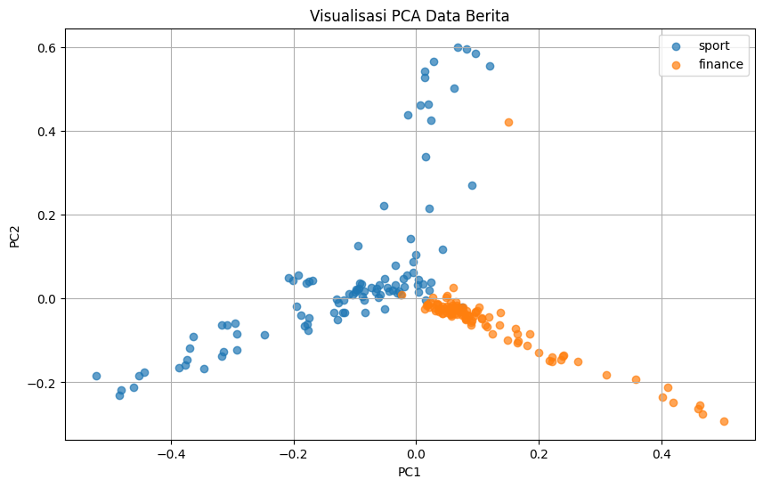

1. Data Understanding#
1.1 Membaca Dataset#
Pada tahap ini, dataset hasil crawling berita Sport dan Finance dibaca menggunakan library pandas. Dataset yang digunakan adalah dataset_berita.csv.
Data kemudian disimpan ke dalam variabel df dalam bentuk DataFrame agar lebih mudah diperiksa dan diolah pada tahap berikutnya.
import pandas as pd
# Membaca dataset hasil crawling
df = pd.read_csv("dataset_berita.csv")
# Menampilkan 5 data pertama
df.head()
| id | isi_berita | label | |
|---|---|---|---|
| 0 | 1 | Jakarta - Putri Kusuma Wardani percaya diri de... | sport |
| 1 | 2 | Jakarta - Mata Derrick Michael Xzavierro berbi... | sport |
| 2 | 3 | Jakarta - Marc Marquez masih harus beradaptasi... | sport |
| 3 | 4 | Jakarta - Momen debut di Asian Games 2026 tak ... | sport |
| 4 | 5 | Jakarta - MotoGP 2026 akan berlanjut ke San Ma... | sport |
1.2 Melihat Struktur Dataset#
dilakukan pengecekan struktur dataset untuk mengetahui jumlah baris dan kolom yang tersedia. Informasi ini digunakan untuk melihat bentuk awal data sebelum masuk ke tahap preprocessing.
Selain itu, nama kolom dan tipe data setiap kolom juga dapat dilihat untuk mengetahui jenis data yang digunakan.
# Melihat ukuran dataset
print("Ukuran dataset:", df.shape)
# Melihat informasi setiap kolom
df.info()
Ukuran dataset: (200, 3)
<class 'pandas.core.frame.DataFrame'>
RangeIndex: 200 entries, 0 to 199
Data columns (total 3 columns):
# Column Non-Null Count Dtype
--- ------ -------------- -----
0 id 200 non-null int64
1 isi_berita 200 non-null object
2 label 200 non-null object
dtypes: int64(1), object(2)
memory usage: 4.8+ KB
1.3 Mengecek Jumlah Data#
Pada tahap ini, jumlah seluruh berita yang terdapat dalam dataset dihitung. Pengecekan ini dilakukan untuk memastikan data yang berhasil dikumpulkan sesuai dengan jumlah data yang ditargetkan pada proses crawling.
# Menampilkan jumlah seluruh data
print("Jumlah seluruh data:", len(df))
Jumlah seluruh data: 200
1.4 Melihat Distribusi Label#
jumlah berita berdasarkan kategorinya dihitung menggunakan kolom label. Dataset terdiri dari dua kategori berita, yaitu sport dan finance.
Pengecekan ini dilakukan untuk mengetahui apakah jumlah data pada setiap kategori sudah sesuai.
# Menghitung jumlah data berdasarkan label
print(df["label"].value_counts())
label
sport 100
finance 100
Name: count, dtype: int64
1.5 Menampilkan Contoh Data#
beberapa data dari masing-masing kategori ditampilkan untuk melihat isi berita yang berhasil dikumpulkan.
Data yang ditampilkan terdiri dari id, isi_berita, dan label. Contoh data ini digunakan untuk melihat kondisi teks sebelum dilakukan preprocessing.
print("===== 5 DATA SPORT =====")
display(
df[df["label"] == "sport"][
["id", "isi_berita", "label"]
].head(5)
)
print("\n===== 5 DATA FINANCE =====")
display(
df[df["label"] == "finance"][
["id", "isi_berita", "label"]
].head(5)
)
===== 5 DATA SPORT =====
| id | isi_berita | label | |
|---|---|---|---|
| 0 | 1 | Jakarta - Putri Kusuma Wardani percaya diri de... | sport |
| 1 | 2 | Jakarta - Mata Derrick Michael Xzavierro berbi... | sport |
| 2 | 3 | Jakarta - Marc Marquez masih harus beradaptasi... | sport |
| 3 | 4 | Jakarta - Momen debut di Asian Games 2026 tak ... | sport |
| 4 | 5 | Jakarta - MotoGP 2026 akan berlanjut ke San Ma... | sport |
===== 5 DATA FINANCE =====
| id | isi_berita | label | |
|---|---|---|---|
| 100 | 101 | Jakarta - Menteri Keuangan (Menkeu) Purbaya Yu... | finance |
| 101 | 102 | Jakarta - Semua masyarakat akan memiliki reken... | finance |
| 102 | 103 | Jakarta - Perdana Menteri (PM) Singapura, Lawr... | finance |
| 103 | 104 | Jakarta - Harga emas Antam terus mengalami pen... | finance |
| 104 | 105 | Jakarta - Penyedia kontrol lalu lintas udara, ... | finance |
1.6 Mengecek Data Kosong#
Pada tahap ini, dilakukan pengecekan terhadap data yang memiliki nilai kosong atau NaN. Data kosong perlu diketahui sebelum preprocessing karena dapat memengaruhi proses pengolahan teks.
# Mengecek jumlah data kosong pada setiap kolom
print(df.isnull().sum())
id 0
isi_berita 0
label 0
dtype: int64
1.7 Mengecek Data Duplikat#
Pada tahap ini, dilakukan pengecekan terhadap data yang memiliki isi yang sama. Data duplikat perlu diperiksa agar satu berita tidak diproses lebih dari satu kali.
# Mengecek jumlah data duplikat
print("Jumlah data duplikat:", df.duplicated().sum())
Jumlah data duplikat: 0
2. Data Preprocessing#
2.1 Case Folding#
Case folding dilakukan untuk mengubah seluruh huruf pada teks menjadi huruf kecil atau lowercase.
Tujuannya adalah agar kata yang sama tetapi memiliki perbedaan penggunaan huruf besar dan kecil dianggap sebagai kata yang sama. Contohnya, kata Indonesia, INDONESIA, dan indonesia akan menjadi indonesia.
# Mengubah seluruh teks menjadi huruf kecil
df["teks_case_folding"] = df["isi_berita"].str.lower()
# Menampilkan hasil
df[["isi_berita", "teks_case_folding"]].head()
| isi_berita | teks_case_folding | |
|---|---|---|
| 0 | Jakarta - Putri Kusuma Wardani percaya diri de... | jakarta - putri kusuma wardani percaya diri de... |
| 1 | Jakarta - Mata Derrick Michael Xzavierro berbi... | jakarta - mata derrick michael xzavierro berbi... |
| 2 | Jakarta - Marc Marquez masih harus beradaptasi... | jakarta - marc marquez masih harus beradaptasi... |
| 3 | Jakarta - Momen debut di Asian Games 2026 tak ... | jakarta - momen debut di asian games 2026 tak ... |
| 4 | Jakarta - MotoGP 2026 akan berlanjut ke San Ma... | jakarta - motogp 2026 akan berlanjut ke san ma... |
2.2 Cleaning Data#
Cleaning dilakukan untuk membersihkan teks dari angka, tanda baca, URL, dan karakter yang tidak diperlukan.
Tahap ini bertujuan agar teks yang digunakan pada proses ekstraksi fitur hanya berisi kata-kata yang relevan.
import re
def cleaning(teks):
# Menghapus URL
teks = re.sub(r"http\S+|www\S+", " ", teks)
# Menghapus angka
teks = re.sub(r"\d+", " ", teks)
# Menghapus tanda baca dan karakter selain huruf
teks = re.sub(r"[^a-zA-Z\s]", " ", teks)
# Menghapus spasi berlebih
teks = re.sub(r"\s+", " ", teks).strip()
return teks
df["teks_cleaning"] = df["teks_case_folding"].apply(cleaning)
df[["teks_case_folding", "teks_cleaning"]].head()
| teks_case_folding | teks_cleaning | |
|---|---|---|
| 0 | jakarta - putri kusuma wardani percaya diri de... | jakarta putri kusuma wardani percaya diri deng... |
| 1 | jakarta - mata derrick michael xzavierro berbi... | jakarta mata derrick michael xzavierro berbina... |
| 2 | jakarta - marc marquez masih harus beradaptasi... | jakarta marc marquez masih harus beradaptasi d... |
| 3 | jakarta - momen debut di asian games 2026 tak ... | jakarta momen debut di asian games tak mau dis... |
| 4 | jakarta - motogp 2026 akan berlanjut ke san ma... | jakarta motogp akan berlanjut ke san marino se... |
2.3 Tokenisasi#
Tokenisasi merupakan proses memisahkan teks menjadi bagian-bagian yang lebih kecil berupa kata atau token.
Sebagai contoh, kalimat tim indonesia memenangkan pertandingan akan diubah menjadi beberapa token, yaitu tim, indonesia, memenangkan, dan pertandingan.
# Memisahkan teks menjadi kata
df["tokens"] = df["teks_cleaning"].apply(lambda teks: teks.split())
# Menampilkan hasil tokenisasi
df[["teks_cleaning", "tokens"]].head()
| teks_cleaning | tokens | |
|---|---|---|
| 0 | jakarta putri kusuma wardani percaya diri deng... | [jakarta, putri, kusuma, wardani, percaya, dir... |
| 1 | jakarta mata derrick michael xzavierro berbina... | [jakarta, mata, derrick, michael, xzavierro, b... |
| 2 | jakarta marc marquez masih harus beradaptasi d... | [jakarta, marc, marquez, masih, harus, beradap... |
| 3 | jakarta momen debut di asian games tak mau dis... | [jakarta, momen, debut, di, asian, games, tak,... |
| 4 | jakarta motogp akan berlanjut ke san marino se... | [jakarta, motogp, akan, berlanjut, ke, san, ma... |
2.4 Stopword Removal#
Stopword removal dilakukan untuk menghapus kata-kata umum yang sering muncul tetapi biasanya tidak memberikan informasi penting dalam analisis teks.
Contohnya seperti yang, dan, di, ke, dari, dan kata umum lainnya.
%pip install nltk
Defaulting to user installation because normal site-packages is not writeable
Requirement already satisfied: nltk in C:\Users\acer\AppData\Roaming\Python\Python312\site-packages (3.10.3)
Requirement already satisfied: defusedxml in C:\Users\acer\AppData\Roaming\Python\Python312\site-packages (from nltk) (0.7.1)
Requirement already satisfied: click in C:\Users\acer\AppData\Roaming\Python\Python312\site-packages (from nltk) (8.2.1)
Requirement already satisfied: joblib in C:\Users\acer\AppData\Roaming\Python\Python312\site-packages (from nltk) (1.5.1)
Requirement already satisfied: regex>=2021.8.3 in C:\Users\acer\AppData\Roaming\Python\Python312\site-packages (from nltk) (2026.9.10)
Requirement already satisfied: tqdm in C:\Users\acer\AppData\Roaming\Python\Python312\site-packages (from nltk) (4.70.1)
Requirement already satisfied: colorama in C:\Users\acer\AppData\Roaming\Python\Python312\site-packages (from click->nltk) (0.4.6)
Note: you may need to restart the kernel to use updated packages.
import nltk
nltk.download("stopwords")
from nltk.corpus import stopwords
stopword_indonesia = set(
stopwords.words("indonesian")
)
df["tokens_stopword"] = df["tokens"].apply(
lambda tokens: [
kata for kata in tokens
if kata not in stopword_indonesia
]
)
df[["tokens", "tokens_stopword"]].head()
[nltk_data] Downloading package stopwords to
[nltk_data] C:\Users\acer\AppData\Roaming\nltk_data...
[nltk_data] Package stopwords is already up-to-date!
| tokens | tokens_stopword | |
|---|---|---|
| 0 | [jakarta, putri, kusuma, wardani, percaya, dir... | [jakarta, putri, kusuma, wardani, percaya, kom... |
| 1 | [jakarta, mata, derrick, michael, xzavierro, b... | [jakarta, mata, derrick, michael, xzavierro, b... |
| 2 | [jakarta, marc, marquez, masih, harus, beradap... | [jakarta, marc, marquez, beradaptasi, kondisi,... |
| 3 | [jakarta, momen, debut, di, asian, games, tak,... | [jakarta, momen, debut, asian, games, disia, s... |
| 4 | [jakarta, motogp, akan, berlanjut, ke, san, ma... | [jakarta, motogp, berlanjut, san, marino, seri... |
from nltk.corpus import stopwords
stopword_indonesia = set(
stopwords.words("indonesian")
)
print("Jumlah stopword:", len(stopword_indonesia))
Jumlah stopword: 757
2.5 Stemming#
Stemming dilakukan untuk mengubah kata menjadi bentuk dasarnya. Pada tahap ini digunakan library Sastrawi yang menyediakan stemmer untuk Bahasa Indonesia.
Sebagai contoh, kata berlari, lari, dan berlarian dapat dikembalikan ke bentuk dasar lari.
Tahap stemming membantu mengurangi variasi kata sehingga kata yang memiliki bentuk berbeda tetapi berasal dari kata dasar yang sama dapat diperlakukan sebagai kata yang sama.
%pip install Sastrawi
Defaulting to user installation because normal site-packages is not writeable
Requirement already satisfied: Sastrawi in C:\Users\acer\AppData\Roaming\Python\Python312\site-packages (1.0.1)
Note: you may need to restart the kernel to use updated packages.
from Sastrawi.Stemmer.StemmerFactory import StemmerFactory
factory = StemmerFactory()
stemmer = factory.create_stemmer()
def stemming(tokens):
teks = " ".join(tokens)
return stemmer.stem(teks)
df["teks_preprocessed"] = df["tokens_stopword"].apply(
stemming
)
df[["isi_berita", "teks_preprocessed"]].head()
---------------------------------------------------------------------------
KeyboardInterrupt Traceback (most recent call last)
Cell In[15], line 10
7 teks = " ".join(tokens)
8 return stemmer.stem(teks)
---> 10 df["teks_preprocessed"] = df["tokens_stopword"].apply(
11 stemming
12 )
14 df[["isi_berita", "teks_preprocessed"]].head()
File ~\AppData\Roaming\Python\Python312\site-packages\pandas\core\series.py:4935, in Series.apply(self, func, convert_dtype, args, by_row, **kwargs)
4800 def apply(
4801 self,
4802 func: AggFuncType,
(...)
4807 **kwargs,
4808 ) -> DataFrame | Series:
4809 """
4810 Invoke function on values of Series.
4811
(...)
4926 dtype: float64
4927 """
4928 return SeriesApply(
4929 self,
4930 func,
4931 convert_dtype=convert_dtype,
4932 by_row=by_row,
4933 args=args,
4934 kwargs=kwargs,
-> 4935 ).apply()
File ~\AppData\Roaming\Python\Python312\site-packages\pandas\core\apply.py:1422, in SeriesApply.apply(self)
1419 return self.apply_compat()
1421 # self.func is Callable
-> 1422 return self.apply_standard()
File ~\AppData\Roaming\Python\Python312\site-packages\pandas\core\apply.py:1502, in SeriesApply.apply_standard(self)
1496 # row-wise access
1497 # apply doesn't have a `na_action` keyword and for backward compat reasons
1498 # we need to give `na_action="ignore"` for categorical data.
1499 # TODO: remove the `na_action="ignore"` when that default has been changed in
1500 # Categorical (GH51645).
1501 action = "ignore" if isinstance(obj.dtype, CategoricalDtype) else None
-> 1502 mapped = obj._map_values(
1503 mapper=curried, na_action=action, convert=self.convert_dtype
1504 )
1506 if len(mapped) and isinstance(mapped[0], ABCSeries):
1507 # GH#43986 Need to do list(mapped) in order to get treated as nested
1508 # See also GH#25959 regarding EA support
1509 return obj._constructor_expanddim(list(mapped), index=obj.index)
File ~\AppData\Roaming\Python\Python312\site-packages\pandas\core\base.py:925, in IndexOpsMixin._map_values(self, mapper, na_action, convert)
922 if isinstance(arr, ExtensionArray):
923 return arr.map(mapper, na_action=na_action)
--> 925 return algorithms.map_array(arr, mapper, na_action=na_action, convert=convert)
File ~\AppData\Roaming\Python\Python312\site-packages\pandas\core\algorithms.py:1743, in map_array(arr, mapper, na_action, convert)
1741 values = arr.astype(object, copy=False)
1742 if na_action is None:
-> 1743 return lib.map_infer(values, mapper, convert=convert)
1744 else:
1745 return lib.map_infer_mask(
1746 values, mapper, mask=isna(values).view(np.uint8), convert=convert
1747 )
File pandas/_libs/lib.pyx:2999, in pandas._libs.lib.map_infer()
Cell In[15], line 8, in stemming(tokens)
6 def stemming(tokens):
7 teks = " ".join(tokens)
----> 8 return stemmer.stem(teks)
File ~\AppData\Roaming\Python\Python312\site-packages\Sastrawi\Stemmer\CachedStemmer.py:20, in CachedStemmer.stem(self, text)
18 stems.append(self.cache.get(word))
19 else:
---> 20 stem = self.delegatedStemmer.stem(word)
21 self.cache.set(word, stem)
22 stems.append(stem)
File ~\AppData\Roaming\Python\Python312\site-packages\Sastrawi\Stemmer\Stemmer.py:27, in Stemmer.stem(self, text)
24 stems = []
26 for word in words:
---> 27 stems.append(self.stem_word(word))
29 return ' '.join(stems)
File ~\AppData\Roaming\Python\Python312\site-packages\Sastrawi\Stemmer\Stemmer.py:36, in Stemmer.stem_word(self, word)
34 return self.stem_plural_word(word)
35 else:
---> 36 return self.stem_singular_word(word)
File ~\AppData\Roaming\Python\Python312\site-packages\Sastrawi\Stemmer\Stemmer.py:84, in Stemmer.stem_singular_word(self, word)
82 """Stem a singular word to its common stem form."""
83 context = Context(word, self.dictionary, self.visitor_provider)
---> 84 context.execute()
86 return context.result
File ~\AppData\Roaming\Python\Python312\site-packages\Sastrawi\Stemmer\Context\Context.py:37, in Context.execute(self)
34 """Execute stemming process; the result can be retrieved with result"""
36 #step 1 - 5
---> 37 self.start_stemming_process()
39 #step 6
40 if self.dictionary.contains(self.current_word):
File ~\AppData\Roaming\Python\Python312\site-packages\Sastrawi\Stemmer\Context\Context.py:80, in Context.start_stemming_process(self)
77 return
79 #step 4, 5
---> 80 self.remove_prefixes()
81 if self.dictionary.contains(self.current_word):
82 return
File ~\AppData\Roaming\Python\Python312\site-packages\Sastrawi\Stemmer\Context\Context.py:89, in Context.remove_prefixes(self)
87 def remove_prefixes(self):
88 for i in range(3):
---> 89 self.accept_prefix_visitors(self.prefix_pisitors)
90 if self.dictionary.contains(self.current_word):
91 return
File ~\AppData\Roaming\Python\Python312\site-packages\Sastrawi\Stemmer\Context\Context.py:110, in Context.accept_prefix_visitors(self, visitors)
108 removalCount = len(self.removals)
109 for visitor in visitors:
--> 110 self.accept(visitor)
111 if self.dictionary.contains(self.current_word):
112 return self.current_word
File ~\AppData\Roaming\Python\Python312\site-packages\Sastrawi\Stemmer\Context\Context.py:96, in Context.accept(self, visitor)
93 def remove_suffixes(self):
94 self.accept_visitors(self.suffix_visitors)
---> 96 def accept(self, visitor):
97 visitor.visit(self)
99 def accept_visitors(self, visitors):
KeyboardInterrupt:
3. Ekstraksi Fitur#
Pada tahap ini, seluruh kata yang terdapat pada dokumen berita setelah preprocessing diekstrak menggunakan CountVectorizer dari library scikit-learn.
Kata-kata yang ditemukan akan menjadi fitur atau vocabulary yang digunakan pada proses representasi TF-IDF.
Setiap kata yang berbeda akan menjadi satu fitur dalam dataset.
from sklearn.feature_extraction.text import CountVectorizer
vectorizer = CountVectorizer()
X_count = vectorizer.fit_transform(
df["teks_preprocessed"]
)
kata_unik = vectorizer.get_feature_names_out()
# Membuat tabel seluruh kata unik
df_kata_unik = pd.DataFrame({
"No": range(1, len(kata_unik) + 1),
"Kata Unik": kata_unik
})
# Menampilkan jumlah kata unik
print("Jumlah kata unik:", len(kata_unik))
# Menampilkan tabel kata unik
display(df_kata_unik)
Jumlah kata unik: 5154
| No | Kata Unik | |
|---|---|---|
| 0 | 1 | aam |
| 1 | 2 | aan |
| 2 | 3 | abadi |
| 3 | 4 | abai |
| 4 | 5 | abal |
| ... | ... | ... |
| 5149 | 5150 | zulfikri |
| 5150 | 5151 | zulhas |
| 5151 | 5152 | zulkifli |
| 5152 | 5153 | zurich |
| 5153 | 5154 | zvan |
5154 rows × 2 columns
4. One-Hot Encoding#
One-Hot Encoding digunakan untuk melihat representasi setiap kata dalam bentuk nilai 0 dan 1. Untuk memudahkan pembacaan, hasil yang ditampilkan hanya beberapa kata pertama.
from sklearn.preprocessing import OneHotEncoder
import numpy as np
# Mengambil 10 kata unik pertama untuk ditampilkan
kata_tampil = kata_unik[:10]
encoder = OneHotEncoder(
sparse_output=False
)
one_hot = encoder.fit_transform(
np.array(kata_tampil).reshape(-1, 1)
)
df_one_hot = pd.DataFrame(
one_hot.astype(int),
columns=kata_tampil,
index=kata_tampil
)
df_one_hot.index.name = "Kata"
print("Jumlah seluruh kata unik:", len(kata_unik))
print("Jumlah kata yang ditampilkan:", len(kata_tampil))
print("Ukuran One-Hot Encoding:", one_hot.shape)
display(df_one_hot)
Jumlah seluruh kata unik: 5154
Jumlah kata yang ditampilkan: 10
Ukuran One-Hot Encoding: (10, 10)
| aam | aan | abadi | abai | abal | abang | abdukhodir | abdul | abdullah | aberdeen | |
|---|---|---|---|---|---|---|---|---|---|---|
| Kata | ||||||||||
| aam | 1 | 0 | 0 | 0 | 0 | 0 | 0 | 0 | 0 | 0 |
| aan | 0 | 1 | 0 | 0 | 0 | 0 | 0 | 0 | 0 | 0 |
| abadi | 0 | 0 | 1 | 0 | 0 | 0 | 0 | 0 | 0 | 0 |
| abai | 0 | 0 | 0 | 1 | 0 | 0 | 0 | 0 | 0 | 0 |
| abal | 0 | 0 | 0 | 0 | 1 | 0 | 0 | 0 | 0 | 0 |
| abang | 0 | 0 | 0 | 0 | 0 | 1 | 0 | 0 | 0 | 0 |
| abdukhodir | 0 | 0 | 0 | 0 | 0 | 0 | 1 | 0 | 0 | 0 |
| abdul | 0 | 0 | 0 | 0 | 0 | 0 | 0 | 1 | 0 | 0 |
| abdullah | 0 | 0 | 0 | 0 | 0 | 0 | 0 | 0 | 1 | 0 |
| aberdeen | 0 | 0 | 0 | 0 | 0 | 0 | 0 | 0 | 0 | 1 |
5. Bag of Words#
Bag of Words digunakan untuk melihat jumlah kemunculan kata pada setiap berita. Hasil yang ditampilkan hanya beberapa berita dan beberapa kata agar tabel lebih mudah dibaca.
from sklearn.feature_extraction.text import CountVectorizer
vectorizer = CountVectorizer()
X_bow = vectorizer.fit_transform(
df["teks_preprocessed"]
)
fitur_bow = vectorizer.get_feature_names_out()
# Menampilkan 10 berita dan 10 kata pertama
df_bow = pd.DataFrame(
X_bow[:10, :10].toarray(),
columns=fitur_bow[:10]
)
df_bow.insert(
0,
"id",
df["id"].head(10).values
)
print("Jumlah berita:", X_bow.shape[0])
print("Jumlah fitur/kata:", X_bow.shape[1])
print("Ukuran matriks BoW:", X_bow.shape)
display(df_bow)
Jumlah berita: 200
Jumlah fitur/kata: 5154
Ukuran matriks BoW: (200, 5154)
| id | aam | aan | abadi | abai | abal | abang | abdukhodir | abdul | abdullah | aberdeen | |
|---|---|---|---|---|---|---|---|---|---|---|---|
| 0 | 1 | 0 | 0 | 0 | 0 | 0 | 0 | 0 | 0 | 0 | 0 |
| 1 | 2 | 0 | 0 | 0 | 0 | 0 | 0 | 0 | 0 | 0 | 0 |
| 2 | 3 | 0 | 0 | 0 | 0 | 0 | 0 | 0 | 0 | 0 | 0 |
| 3 | 4 | 0 | 0 | 0 | 0 | 0 | 0 | 0 | 0 | 0 | 0 |
| 4 | 5 | 0 | 0 | 0 | 0 | 0 | 0 | 0 | 0 | 0 | 0 |
| 5 | 6 | 0 | 0 | 0 | 0 | 0 | 0 | 0 | 0 | 0 | 0 |
| 6 | 7 | 0 | 0 | 0 | 0 | 0 | 0 | 0 | 0 | 0 | 0 |
| 7 | 8 | 0 | 0 | 0 | 0 | 0 | 0 | 0 | 0 | 0 | 0 |
| 8 | 9 | 0 | 0 | 0 | 0 | 0 | 0 | 0 | 0 | 0 | 0 |
| 9 | 10 | 0 | 0 | 0 | 0 | 0 | 0 | 0 | 0 | 0 | 0 |
6. Representasi TF-IDF#
Pada tahap ini, setiap dokumen berita direpresentasikan dalam bentuk nilai TF-IDF.
TF-IDF digunakan untuk memberikan bobot pada setiap kata berdasarkan tingkat kepentingannya dalam sebuah dokumen.
Secara umum, nilai TF-IDF dihitung menggunakan:
dengan:
\(TF(t,d)\) adalah frekuensi kemunculan kata \(t\) pada dokumen \(d\).
\(IDF(t)\) menunjukkan seberapa jarang kata tersebut muncul pada seluruh dokumen.
\(TFIDF(t,d)\) merupakan bobot akhir kata \(t\) pada dokumen \(d\).
from sklearn.feature_extraction.text import TfidfVectorizer
tfidf_vectorizer = TfidfVectorizer()
X_tfidf = tfidf_vectorizer.fit_transform(
df["teks_preprocessed"]
)
fitur_tfidf = tfidf_vectorizer.get_feature_names_out()
print("Jumlah berita:", X_tfidf.shape[0])
print("Jumlah fitur/kata:", X_tfidf.shape[1])
print("Ukuran matriks TF-IDF:", X_tfidf.shape)
# Menampilkan data ID 101 sampai 120
df_tfidf = pd.DataFrame(
X_tfidf[100:110, :10].toarray(),
columns=fitur_tfidf[:10]
)
df_tfidf.insert(
0,
"id",
df["id"].iloc[100:110].values
)
display(df_tfidf)
Jumlah berita: 200
Jumlah fitur/kata: 5154
Ukuran matriks TF-IDF: (200, 5154)
| id | aam | aan | abadi | abai | abal | abang | abdukhodir | abdul | abdullah | aberdeen | |
|---|---|---|---|---|---|---|---|---|---|---|---|
| 0 | 101 | 0.0 | 0.0 | 0.0 | 0.0 | 0.0 | 0.0 | 0.0 | 0.0 | 0.0 | 0.000000 |
| 1 | 102 | 0.0 | 0.0 | 0.0 | 0.0 | 0.0 | 0.0 | 0.0 | 0.0 | 0.0 | 0.000000 |
| 2 | 103 | 0.0 | 0.0 | 0.0 | 0.0 | 0.0 | 0.0 | 0.0 | 0.0 | 0.0 | 0.000000 |
| 3 | 104 | 0.0 | 0.0 | 0.0 | 0.0 | 0.0 | 0.0 | 0.0 | 0.0 | 0.0 | 0.000000 |
| 4 | 105 | 0.0 | 0.0 | 0.0 | 0.0 | 0.0 | 0.0 | 0.0 | 0.0 | 0.0 | 0.048737 |
| 5 | 106 | 0.0 | 0.0 | 0.0 | 0.0 | 0.0 | 0.0 | 0.0 | 0.0 | 0.0 | 0.000000 |
| 6 | 107 | 0.0 | 0.0 | 0.0 | 0.0 | 0.0 | 0.0 | 0.0 | 0.0 | 0.0 | 0.000000 |
| 7 | 108 | 0.0 | 0.0 | 0.0 | 0.0 | 0.0 | 0.0 | 0.0 | 0.0 | 0.0 | 0.000000 |
| 8 | 109 | 0.0 | 0.0 | 0.0 | 0.0 | 0.0 | 0.0 | 0.0 | 0.0 | 0.0 | 0.000000 |
| 9 | 110 | 0.0 | 0.0 | 0.0 | 0.0 | 0.0 | 0.0 | 0.0 | 0.0 | 0.0 | 0.000000 |
# Membuat DataFrame dari hasil TF-IDF
df_tfidf_lengkap = pd.DataFrame(
X_tfidf.toarray(),
columns=fitur_tfidf
)
# Menambahkan ID jika belum ada
if "id" not in df_tfidf_lengkap.columns:
df_tfidf_lengkap.insert(
0,
"id",
df["id"].values
)
# Menambahkan label jika belum ada
if "label" not in df_tfidf_lengkap.columns:
df_tfidf_lengkap["label"] = df["label"].values
# Menyimpan hasil TF-IDF
df_tfidf_lengkap.to_csv(
"hasil_tfidf.csv",
index=False,
encoding="utf-8-sig"
)
print("Hasil TF-IDF berhasil disimpan.")
print("Nama file: hasil_tfidf.csv")
print("Ukuran data:", df_tfidf_lengkap.shape)
Hasil TF-IDF berhasil disimpan.
Nama file: hasil_tfidf.csv
Ukuran data: (200, 5155)
7. Reduksi Dimensi dengan PCA#
7.1 Menyiapkan Data TF-IDF#
Pada tahap sebelumnya, setiap berita telah direpresentasikan dalam bentuk TF-IDF. Hasil tersebut memiliki jumlah fitur yang cukup banyak karena setiap kata unik menjadi sebuah fitur.
Data TF-IDF kemudian digunakan sebagai input untuk proses reduksi dimensi menggunakan Principal Component Analysis (PCA).
# Mengubah sparse matrix menjadi array
X_tfidf_dense = X_tfidf.toarray()
print("Ukuran data TF-IDF:", X_tfidf_dense.shape)
Ukuran data TF-IDF: (200, 5154)
7.2 Menerapkan PCA#
PCA digunakan untuk mengurangi jumlah dimensi pada data TF-IDF dengan mempertahankan variasi atau informasi utama yang terdapat pada data.
Pada tahap ini, jumlah komponen PCA tidak langsung ditentukan menjadi 2. Seluruh komponen terlebih dahulu dihitung untuk melihat seberapa besar variasi data yang dapat dijelaskan oleh masing-masing komponen.
from sklearn.decomposition import PCA
# Membuat PCA tanpa menentukan jumlah komponen
pca = PCA()
# Menerapkan PCA
X_pca = pca.fit_transform(X_tfidf_dense)
print("Ukuran data sebelum PCA :", X_tfidf_dense.shape)
print("Ukuran data setelah PCA :", X_pca.shape)
Ukuran data sebelum PCA : (200, 5154)
Ukuran data setelah PCA : (200, 200)
7.3 Melihat Explained Variance#
Explained variance digunakan untuk mengetahui seberapa besar variasi data yang dapat dijelaskan oleh setiap komponen utama.
Nilai yang lebih besar menunjukkan bahwa komponen tersebut mampu menjelaskan variasi data yang lebih besar.
explained_variance = pca.explained_variance_ratio_
print("Explained variance setiap komponen:")
for i, nilai in enumerate(
explained_variance,
start=1
):
print(
f"Komponen {i}: {nilai:.6f} "
f"({nilai * 100:.2f}%)"
)
Explained variance setiap komponen:
Komponen 1: 0.032560 (3.26%)
Komponen 2: 0.026883 (2.69%)
Komponen 3: 0.024980 (2.50%)
Komponen 4: 0.021455 (2.15%)
Komponen 5: 0.020064 (2.01%)
Komponen 6: 0.019614 (1.96%)
Komponen 7: 0.016114 (1.61%)
Komponen 8: 0.015534 (1.55%)
Komponen 9: 0.014853 (1.49%)
Komponen 10: 0.014383 (1.44%)
Komponen 11: 0.013566 (1.36%)
Komponen 12: 0.012037 (1.20%)
Komponen 13: 0.011697 (1.17%)
Komponen 14: 0.011498 (1.15%)
Komponen 15: 0.011333 (1.13%)
Komponen 16: 0.011242 (1.12%)
Komponen 17: 0.010947 (1.09%)
Komponen 18: 0.010733 (1.07%)
Komponen 19: 0.009910 (0.99%)
Komponen 20: 0.009821 (0.98%)
Komponen 21: 0.009446 (0.94%)
Komponen 22: 0.009085 (0.91%)
Komponen 23: 0.008893 (0.89%)
Komponen 24: 0.008736 (0.87%)
Komponen 25: 0.008417 (0.84%)
Komponen 26: 0.008292 (0.83%)
Komponen 27: 0.007901 (0.79%)
Komponen 28: 0.007786 (0.78%)
Komponen 29: 0.007536 (0.75%)
Komponen 30: 0.007392 (0.74%)
Komponen 31: 0.007366 (0.74%)
Komponen 32: 0.007323 (0.73%)
Komponen 33: 0.007244 (0.72%)
Komponen 34: 0.007088 (0.71%)
Komponen 35: 0.006771 (0.68%)
Komponen 36: 0.006722 (0.67%)
Komponen 37: 0.006615 (0.66%)
Komponen 38: 0.006524 (0.65%)
Komponen 39: 0.006368 (0.64%)
Komponen 40: 0.006311 (0.63%)
Komponen 41: 0.006244 (0.62%)
Komponen 42: 0.006128 (0.61%)
Komponen 43: 0.006073 (0.61%)
Komponen 44: 0.006049 (0.60%)
Komponen 45: 0.005997 (0.60%)
Komponen 46: 0.005943 (0.59%)
Komponen 47: 0.005839 (0.58%)
Komponen 48: 0.005805 (0.58%)
Komponen 49: 0.005703 (0.57%)
Komponen 50: 0.005674 (0.57%)
Komponen 51: 0.005593 (0.56%)
Komponen 52: 0.005551 (0.56%)
Komponen 53: 0.005506 (0.55%)
Komponen 54: 0.005441 (0.54%)
Komponen 55: 0.005432 (0.54%)
Komponen 56: 0.005403 (0.54%)
Komponen 57: 0.005337 (0.53%)
Komponen 58: 0.005311 (0.53%)
Komponen 59: 0.005254 (0.53%)
Komponen 60: 0.005215 (0.52%)
Komponen 61: 0.005207 (0.52%)
Komponen 62: 0.005186 (0.52%)
Komponen 63: 0.005140 (0.51%)
Komponen 64: 0.005118 (0.51%)
Komponen 65: 0.005090 (0.51%)
Komponen 66: 0.005080 (0.51%)
Komponen 67: 0.005021 (0.50%)
Komponen 68: 0.005014 (0.50%)
Komponen 69: 0.004993 (0.50%)
Komponen 70: 0.004942 (0.49%)
Komponen 71: 0.004911 (0.49%)
Komponen 72: 0.004905 (0.49%)
Komponen 73: 0.004869 (0.49%)
Komponen 74: 0.004831 (0.48%)
Komponen 75: 0.004815 (0.48%)
Komponen 76: 0.004786 (0.48%)
Komponen 77: 0.004763 (0.48%)
Komponen 78: 0.004760 (0.48%)
Komponen 79: 0.004696 (0.47%)
Komponen 80: 0.004671 (0.47%)
Komponen 81: 0.004657 (0.47%)
Komponen 82: 0.004604 (0.46%)
Komponen 83: 0.004589 (0.46%)
Komponen 84: 0.004577 (0.46%)
Komponen 85: 0.004527 (0.45%)
Komponen 86: 0.004493 (0.45%)
Komponen 87: 0.004453 (0.45%)
Komponen 88: 0.004410 (0.44%)
Komponen 89: 0.004367 (0.44%)
Komponen 90: 0.004347 (0.43%)
Komponen 91: 0.004288 (0.43%)
Komponen 92: 0.004267 (0.43%)
Komponen 93: 0.004247 (0.42%)
Komponen 94: 0.004215 (0.42%)
Komponen 95: 0.004186 (0.42%)
Komponen 96: 0.004167 (0.42%)
Komponen 97: 0.004141 (0.41%)
Komponen 98: 0.004098 (0.41%)
Komponen 99: 0.004073 (0.41%)
Komponen 100: 0.004067 (0.41%)
Komponen 101: 0.004039 (0.40%)
Komponen 102: 0.004023 (0.40%)
Komponen 103: 0.004015 (0.40%)
Komponen 104: 0.003955 (0.40%)
Komponen 105: 0.003937 (0.39%)
Komponen 106: 0.003917 (0.39%)
Komponen 107: 0.003878 (0.39%)
Komponen 108: 0.003864 (0.39%)
Komponen 109: 0.003820 (0.38%)
Komponen 110: 0.003798 (0.38%)
Komponen 111: 0.003781 (0.38%)
Komponen 112: 0.003764 (0.38%)
Komponen 113: 0.003743 (0.37%)
Komponen 114: 0.003710 (0.37%)
Komponen 115: 0.003694 (0.37%)
Komponen 116: 0.003639 (0.36%)
Komponen 117: 0.003582 (0.36%)
Komponen 118: 0.003566 (0.36%)
Komponen 119: 0.003546 (0.35%)
Komponen 120: 0.003476 (0.35%)
Komponen 121: 0.003395 (0.34%)
Komponen 122: 0.003360 (0.34%)
Komponen 123: 0.003316 (0.33%)
Komponen 124: 0.003269 (0.33%)
Komponen 125: 0.003235 (0.32%)
Komponen 126: 0.003161 (0.32%)
Komponen 127: 0.003133 (0.31%)
Komponen 128: 0.003069 (0.31%)
Komponen 129: 0.003030 (0.30%)
Komponen 130: 0.003017 (0.30%)
Komponen 131: 0.002990 (0.30%)
Komponen 132: 0.002939 (0.29%)
Komponen 133: 0.002931 (0.29%)
Komponen 134: 0.002880 (0.29%)
Komponen 135: 0.002826 (0.28%)
Komponen 136: 0.002764 (0.28%)
Komponen 137: 0.002741 (0.27%)
Komponen 138: 0.002726 (0.27%)
Komponen 139: 0.002700 (0.27%)
Komponen 140: 0.002677 (0.27%)
Komponen 141: 0.002662 (0.27%)
Komponen 142: 0.002578 (0.26%)
Komponen 143: 0.002545 (0.25%)
Komponen 144: 0.002518 (0.25%)
Komponen 145: 0.002477 (0.25%)
Komponen 146: 0.002447 (0.24%)
Komponen 147: 0.002424 (0.24%)
Komponen 148: 0.002353 (0.24%)
Komponen 149: 0.002272 (0.23%)
Komponen 150: 0.002261 (0.23%)
Komponen 151: 0.002237 (0.22%)
Komponen 152: 0.002210 (0.22%)
Komponen 153: 0.002192 (0.22%)
Komponen 154: 0.002168 (0.22%)
Komponen 155: 0.002108 (0.21%)
Komponen 156: 0.002095 (0.21%)
Komponen 157: 0.002069 (0.21%)
Komponen 158: 0.002021 (0.20%)
Komponen 159: 0.001977 (0.20%)
Komponen 160: 0.001969 (0.20%)
Komponen 161: 0.001883 (0.19%)
Komponen 162: 0.001872 (0.19%)
Komponen 163: 0.001834 (0.18%)
Komponen 164: 0.001804 (0.18%)
Komponen 165: 0.001767 (0.18%)
Komponen 166: 0.001693 (0.17%)
Komponen 167: 0.001661 (0.17%)
Komponen 168: 0.001628 (0.16%)
Komponen 169: 0.001581 (0.16%)
Komponen 170: 0.001568 (0.16%)
Komponen 171: 0.001535 (0.15%)
Komponen 172: 0.001485 (0.15%)
Komponen 173: 0.001456 (0.15%)
Komponen 174: 0.001408 (0.14%)
Komponen 175: 0.001382 (0.14%)
Komponen 176: 0.001352 (0.14%)
Komponen 177: 0.001331 (0.13%)
Komponen 178: 0.001306 (0.13%)
Komponen 179: 0.001232 (0.12%)
Komponen 180: 0.001216 (0.12%)
Komponen 181: 0.001177 (0.12%)
Komponen 182: 0.001158 (0.12%)
Komponen 183: 0.001131 (0.11%)
Komponen 184: 0.001128 (0.11%)
Komponen 185: 0.001080 (0.11%)
Komponen 186: 0.001043 (0.10%)
Komponen 187: 0.001040 (0.10%)
Komponen 188: 0.000999 (0.10%)
Komponen 189: 0.000965 (0.10%)
Komponen 190: 0.000954 (0.10%)
Komponen 191: 0.000928 (0.09%)
Komponen 192: 0.000920 (0.09%)
Komponen 193: 0.000896 (0.09%)
Komponen 194: 0.000811 (0.08%)
Komponen 195: 0.000781 (0.08%)
Komponen 196: 0.000691 (0.07%)
Komponen 197: 0.000645 (0.06%)
Komponen 198: 0.000540 (0.05%)
Komponen 199: 0.000523 (0.05%)
Komponen 200: 0.000000 (0.00%)
7.4 Menghitung Cumulative Explained Variance#
Cumulative explained variance digunakan untuk melihat jumlah informasi yang dapat dipertahankan jika beberapa komponen utama digabungkan.
Dengan cumulative explained variance, jumlah komponen yang diperlukan untuk mempertahankan sebagian besar informasi dari data dapat ditentukan.
import numpy as np
cumulative_variance = np.cumsum(
explained_variance
)
print("Cumulative explained variance:")
for i, nilai in enumerate(
cumulative_variance,
start=1
):
print(
f"Komponen {i}: "
f"{nilai:.4f} "
f"({nilai * 100:.2f}%)"
)
Cumulative explained variance:
Komponen 1: 0.0326 (3.26%)
Komponen 2: 0.0594 (5.94%)
Komponen 3: 0.0844 (8.44%)
Komponen 4: 0.1059 (10.59%)
Komponen 5: 0.1259 (12.59%)
Komponen 6: 0.1456 (14.56%)
Komponen 7: 0.1617 (16.17%)
Komponen 8: 0.1772 (17.72%)
Komponen 9: 0.1921 (19.21%)
Komponen 10: 0.2064 (20.64%)
Komponen 11: 0.2200 (22.00%)
Komponen 12: 0.2320 (23.20%)
Komponen 13: 0.2437 (24.37%)
Komponen 14: 0.2552 (25.52%)
Komponen 15: 0.2666 (26.66%)
Komponen 16: 0.2778 (27.78%)
Komponen 17: 0.2888 (28.88%)
Komponen 18: 0.2995 (29.95%)
Komponen 19: 0.3094 (30.94%)
Komponen 20: 0.3192 (31.92%)
Komponen 21: 0.3287 (32.87%)
Komponen 22: 0.3378 (33.78%)
Komponen 23: 0.3466 (34.66%)
Komponen 24: 0.3554 (35.54%)
Komponen 25: 0.3638 (36.38%)
Komponen 26: 0.3721 (37.21%)
Komponen 27: 0.3800 (38.00%)
Komponen 28: 0.3878 (38.78%)
Komponen 29: 0.3953 (39.53%)
Komponen 30: 0.4027 (40.27%)
Komponen 31: 0.4101 (41.01%)
Komponen 32: 0.4174 (41.74%)
Komponen 33: 0.4246 (42.46%)
Komponen 34: 0.4317 (43.17%)
Komponen 35: 0.4385 (43.85%)
Komponen 36: 0.4452 (44.52%)
Komponen 37: 0.4518 (45.18%)
Komponen 38: 0.4584 (45.84%)
Komponen 39: 0.4647 (46.47%)
Komponen 40: 0.4710 (47.10%)
Komponen 41: 0.4773 (47.73%)
Komponen 42: 0.4834 (48.34%)
Komponen 43: 0.4895 (48.95%)
Komponen 44: 0.4955 (49.55%)
Komponen 45: 0.5015 (50.15%)
Komponen 46: 0.5075 (50.75%)
Komponen 47: 0.5133 (51.33%)
Komponen 48: 0.5191 (51.91%)
Komponen 49: 0.5248 (52.48%)
Komponen 50: 0.5305 (53.05%)
Komponen 51: 0.5361 (53.61%)
Komponen 52: 0.5416 (54.16%)
Komponen 53: 0.5471 (54.71%)
Komponen 54: 0.5526 (55.26%)
Komponen 55: 0.5580 (55.80%)
Komponen 56: 0.5634 (56.34%)
Komponen 57: 0.5688 (56.88%)
Komponen 58: 0.5741 (57.41%)
Komponen 59: 0.5793 (57.93%)
Komponen 60: 0.5845 (58.45%)
Komponen 61: 0.5897 (58.97%)
Komponen 62: 0.5949 (59.49%)
Komponen 63: 0.6001 (60.01%)
Komponen 64: 0.6052 (60.52%)
Komponen 65: 0.6103 (61.03%)
Komponen 66: 0.6154 (61.54%)
Komponen 67: 0.6204 (62.04%)
Komponen 68: 0.6254 (62.54%)
Komponen 69: 0.6304 (63.04%)
Komponen 70: 0.6353 (63.53%)
Komponen 71: 0.6402 (64.02%)
Komponen 72: 0.6451 (64.51%)
Komponen 73: 0.6500 (65.00%)
Komponen 74: 0.6548 (65.48%)
Komponen 75: 0.6597 (65.97%)
Komponen 76: 0.6644 (66.44%)
Komponen 77: 0.6692 (66.92%)
Komponen 78: 0.6740 (67.40%)
Komponen 79: 0.6787 (67.87%)
Komponen 80: 0.6833 (68.33%)
Komponen 81: 0.6880 (68.80%)
Komponen 82: 0.6926 (69.26%)
Komponen 83: 0.6972 (69.72%)
Komponen 84: 0.7018 (70.18%)
Komponen 85: 0.7063 (70.63%)
Komponen 86: 0.7108 (71.08%)
Komponen 87: 0.7152 (71.52%)
Komponen 88: 0.7196 (71.96%)
Komponen 89: 0.7240 (72.40%)
Komponen 90: 0.7284 (72.84%)
Komponen 91: 0.7326 (73.26%)
Komponen 92: 0.7369 (73.69%)
Komponen 93: 0.7412 (74.12%)
Komponen 94: 0.7454 (74.54%)
Komponen 95: 0.7496 (74.96%)
Komponen 96: 0.7537 (75.37%)
Komponen 97: 0.7579 (75.79%)
Komponen 98: 0.7620 (76.20%)
Komponen 99: 0.7660 (76.60%)
Komponen 100: 0.7701 (77.01%)
Komponen 101: 0.7741 (77.41%)
Komponen 102: 0.7782 (77.82%)
Komponen 103: 0.7822 (78.22%)
Komponen 104: 0.7861 (78.61%)
Komponen 105: 0.7901 (79.01%)
Komponen 106: 0.7940 (79.40%)
Komponen 107: 0.7979 (79.79%)
Komponen 108: 0.8017 (80.17%)
Komponen 109: 0.8056 (80.56%)
Komponen 110: 0.8094 (80.94%)
Komponen 111: 0.8131 (81.31%)
Komponen 112: 0.8169 (81.69%)
Komponen 113: 0.8206 (82.06%)
Komponen 114: 0.8244 (82.44%)
Komponen 115: 0.8280 (82.80%)
Komponen 116: 0.8317 (83.17%)
Komponen 117: 0.8353 (83.53%)
Komponen 118: 0.8388 (83.88%)
Komponen 119: 0.8424 (84.24%)
Komponen 120: 0.8459 (84.59%)
Komponen 121: 0.8493 (84.93%)
Komponen 122: 0.8526 (85.26%)
Komponen 123: 0.8559 (85.59%)
Komponen 124: 0.8592 (85.92%)
Komponen 125: 0.8624 (86.24%)
Komponen 126: 0.8656 (86.56%)
Komponen 127: 0.8687 (86.87%)
Komponen 128: 0.8718 (87.18%)
Komponen 129: 0.8748 (87.48%)
Komponen 130: 0.8778 (87.78%)
Komponen 131: 0.8808 (88.08%)
Komponen 132: 0.8838 (88.38%)
Komponen 133: 0.8867 (88.67%)
Komponen 134: 0.8896 (88.96%)
Komponen 135: 0.8924 (89.24%)
Komponen 136: 0.8952 (89.52%)
Komponen 137: 0.8979 (89.79%)
Komponen 138: 0.9006 (90.06%)
Komponen 139: 0.9033 (90.33%)
Komponen 140: 0.9060 (90.60%)
Komponen 141: 0.9087 (90.87%)
Komponen 142: 0.9113 (91.13%)
Komponen 143: 0.9138 (91.38%)
Komponen 144: 0.9163 (91.63%)
Komponen 145: 0.9188 (91.88%)
Komponen 146: 0.9212 (92.12%)
Komponen 147: 0.9237 (92.37%)
Komponen 148: 0.9260 (92.60%)
Komponen 149: 0.9283 (92.83%)
Komponen 150: 0.9306 (93.06%)
Komponen 151: 0.9328 (93.28%)
Komponen 152: 0.9350 (93.50%)
Komponen 153: 0.9372 (93.72%)
Komponen 154: 0.9394 (93.94%)
Komponen 155: 0.9415 (94.15%)
Komponen 156: 0.9436 (94.36%)
Komponen 157: 0.9456 (94.56%)
Komponen 158: 0.9477 (94.77%)
Komponen 159: 0.9496 (94.96%)
Komponen 160: 0.9516 (95.16%)
Komponen 161: 0.9535 (95.35%)
Komponen 162: 0.9554 (95.54%)
Komponen 163: 0.9572 (95.72%)
Komponen 164: 0.9590 (95.90%)
Komponen 165: 0.9608 (96.08%)
Komponen 166: 0.9625 (96.25%)
Komponen 167: 0.9641 (96.41%)
Komponen 168: 0.9657 (96.57%)
Komponen 169: 0.9673 (96.73%)
Komponen 170: 0.9689 (96.89%)
Komponen 171: 0.9704 (97.04%)
Komponen 172: 0.9719 (97.19%)
Komponen 173: 0.9734 (97.34%)
Komponen 174: 0.9748 (97.48%)
Komponen 175: 0.9762 (97.62%)
Komponen 176: 0.9775 (97.75%)
Komponen 177: 0.9788 (97.88%)
Komponen 178: 0.9801 (98.01%)
Komponen 179: 0.9814 (98.14%)
Komponen 180: 0.9826 (98.26%)
Komponen 181: 0.9838 (98.38%)
Komponen 182: 0.9849 (98.49%)
Komponen 183: 0.9861 (98.61%)
Komponen 184: 0.9872 (98.72%)
Komponen 185: 0.9883 (98.83%)
Komponen 186: 0.9893 (98.93%)
Komponen 187: 0.9903 (99.03%)
Komponen 188: 0.9913 (99.13%)
Komponen 189: 0.9923 (99.23%)
Komponen 190: 0.9933 (99.33%)
Komponen 191: 0.9942 (99.42%)
Komponen 192: 0.9951 (99.51%)
Komponen 193: 0.9960 (99.60%)
Komponen 194: 0.9968 (99.68%)
Komponen 195: 0.9976 (99.76%)
Komponen 196: 0.9983 (99.83%)
Komponen 197: 0.9989 (99.89%)
Komponen 198: 0.9995 (99.95%)
Komponen 199: 1.0000 (100.00%)
Komponen 200: 1.0000 (100.00%)
7.5 Menentukan Jumlah Komponen#
Jumlah komponen ditentukan berdasarkan cumulative explained variance. Pada proses ini digunakan batas 95% untuk melihat berapa banyak komponen utama yang diperlukan agar sebagian besar variasi data tetap dipertahankan.
Dengan cara ini, jumlah komponen tidak ditentukan secara sembarang, tetapi berdasarkan karakteristik data hasil TF-IDF.
target_variance = 0.95
jumlah_komponen = np.argmax(
cumulative_variance >= target_variance
) + 1
print(
f"Jumlah komponen untuk "
f"mempertahankan {target_variance * 100:.0f}% "
f"variance:",
jumlah_komponen
)
Jumlah komponen untuk mempertahankan 95% variance: 160
7.6 Melakukan Reduksi Dimensi#
Setelah jumlah komponen ditentukan berdasarkan cumulative explained variance, PCA diterapkan kembali menggunakan jumlah komponen tersebut.
Hasilnya kemudian dibandingkan dengan jumlah fitur sebelum PCA untuk melihat seberapa besar reduksi dimensi yang dilakukan.
pca_final = PCA(
n_components=jumlah_komponen
)
X_pca_final = pca_final.fit_transform(
X_tfidf_dense
)
print(
"Ukuran sebelum PCA :",
X_tfidf_dense.shape
)
print(
"Ukuran setelah PCA :",
X_pca_final.shape
)
print(
"Jumlah kolom sebelum PCA :",
X_tfidf_dense.shape[1]
)
print(
"Jumlah kolom setelah PCA :",
X_pca_final.shape[1]
)
Ukuran sebelum PCA : (200, 5154)
Ukuran setelah PCA : (200, 160)
Jumlah kolom sebelum PCA : 5154
Jumlah kolom setelah PCA : 160
# Membuat nama kolom untuk setiap komponen PCA
nama_komponen = [
f"PC{i}"
for i in range(1, jumlah_komponen + 1)
]
# Mengubah hasil PCA menjadi DataFrame
df_pca = pd.DataFrame(
X_pca_final,
columns=nama_komponen
)
# Menambahkan ID dan label
df_pca.insert(
0,
"id",
df["id"].values
)
df_pca["label"] = df["label"].values
# Menampilkan tabel hasil PCA
display(df_pca)
# Menyimpan hasil PCA ke CSV
df_pca.to_csv(
"hasil_pca.csv",
index=False,
encoding="utf-8-sig"
)
print("Hasil PCA berhasil disimpan.")
print("Nama file: hasil_pca.csv")
print("Ukuran data:", df_pca.shape)
| id | PC1 | PC2 | PC3 | PC4 | PC5 | PC6 | PC7 | PC8 | PC9 | ... | PC152 | PC153 | PC154 | PC155 | PC156 | PC157 | PC158 | PC159 | PC160 | label | |
|---|---|---|---|---|---|---|---|---|---|---|---|---|---|---|---|---|---|---|---|---|---|
| 0 | 1 | 0.019384 | 0.463168 | -0.147316 | 0.063406 | -0.036620 | 0.023040 | 0.047794 | 0.000258 | -0.013118 | ... | -0.042931 | -0.034029 | 0.028741 | 0.025326 | 0.011930 | -0.007979 | -0.006342 | -0.041714 | -0.019932 | sport |
| 1 | 2 | 0.014593 | 0.526455 | -0.185382 | 0.083944 | -0.028059 | 0.063966 | 0.068710 | 0.011619 | -0.013685 | ... | 0.049460 | 0.064438 | -0.088816 | 0.009965 | -0.045743 | 0.048812 | 0.026757 | 0.023218 | -0.045622 | sport |
| 2 | 3 | -0.033623 | 0.032312 | 0.300234 | 0.180924 | -0.025382 | 0.071693 | 0.034067 | 0.017651 | -0.176063 | ... | 0.031957 | -0.016494 | 0.007204 | 0.003150 | 0.006367 | -0.002609 | -0.054698 | -0.002118 | 0.083554 | sport |
| 3 | 4 | 0.024718 | 0.425306 | -0.117164 | 0.070607 | -0.040539 | 0.030150 | 0.034791 | -0.006646 | -0.018409 | ... | 0.014165 | 0.014179 | -0.068519 | -0.008080 | -0.015166 | 0.024854 | 0.003032 | 0.021821 | 0.037845 | sport |
| 4 | 5 | -0.098930 | 0.016066 | 0.568474 | 0.407086 | -0.031882 | 0.121592 | 0.115481 | 0.026670 | -0.184793 | ... | -0.020729 | -0.052720 | -0.069886 | -0.046552 | -0.078790 | 0.133157 | -0.192460 | 0.159632 | -0.020090 | sport |
| ... | ... | ... | ... | ... | ... | ... | ... | ... | ... | ... | ... | ... | ... | ... | ... | ... | ... | ... | ... | ... | ... |
| 195 | 196 | 0.027757 | 0.002326 | 0.051794 | -0.121951 | -0.033033 | 0.001546 | -0.140028 | -0.084296 | -0.056888 | ... | -0.001812 | -0.017542 | 0.016854 | -0.024955 | 0.044173 | -0.025691 | 0.016144 | -0.003973 | -0.007910 | finance |
| 196 | 197 | 0.096731 | -0.032735 | 0.013086 | -0.075963 | -0.046102 | -0.005666 | -0.049557 | -0.030683 | -0.021015 | ... | 0.025907 | -0.025236 | -0.020001 | -0.021024 | -0.019847 | -0.005334 | -0.006161 | 0.009078 | 0.002904 | finance |
| 197 | 198 | 0.085754 | -0.040227 | 0.048289 | -0.140629 | -0.069266 | -0.010207 | -0.103598 | -0.075392 | -0.045822 | ... | -0.042564 | -0.008937 | -0.020109 | 0.021367 | 0.014306 | -0.008073 | -0.017521 | -0.006779 | -0.004135 | finance |
| 198 | 199 | 0.240581 | -0.135719 | -0.059974 | -0.013798 | -0.050597 | -0.014599 | 0.269150 | 0.095469 | 0.046739 | ... | 0.041767 | -0.017191 | 0.013682 | -0.006029 | -0.065631 | -0.021054 | -0.017614 | -0.015746 | -0.018421 | finance |
| 199 | 200 | 0.099995 | -0.028885 | 0.009865 | -0.034921 | -0.017418 | -0.011507 | -0.037690 | -0.030804 | -0.012427 | ... | 0.003458 | -0.007285 | 0.013347 | -0.006128 | 0.001582 | -0.007765 | -0.012457 | 0.002935 | 0.003642 | finance |
200 rows × 162 columns
Hasil PCA berhasil disimpan.
Nama file: hasil_pca.csv
Ukuran data: (200, 162)
8. Visualisasi Data Hasil PCA#
8.1 Menyiapkan Data Hasil PCA#
Hasil reduksi dimensi dari PCA disimpan ke dalam DataFrame bersama dengan label berita. Data ini digunakan untuk membuat visualisasi persebaran berita Sport dan Finance.
df_pca = pd.DataFrame(
X_pca,
columns=["PC1", "PC2"]
)
df_pca["label"] = df["label"].values
df_pca.head()
| PC1 | PC2 | label | |
|---|---|---|---|
| 0 | 0.019438 | 0.462864 | sport |
| 1 | 0.014617 | 0.526227 | sport |
| 2 | -0.033595 | 0.032394 | sport |
| 3 | 0.024731 | 0.425172 | sport |
| 4 | -0.098901 | 0.016148 | sport |
8.2 Visualisasi Hasil PCA#
Setelah proses TF-IDF, jumlah fitur yang digunakan menjadi cukup banyak karena setiap kata unik menjadi fitur. PCA dapat digunakan untuk menyederhanakan data tersebut sehingga pola antarberita lebih mudah dilihat.
Pada tahap visualisasi, data direduksi menjadi dua komponen utama, yaitu PC1 dan PC2. PC1 digunakan sebagai sumbu X dan PC2 sebagai sumbu Y.
Penggunaan dua komponen pada tahap ini hanya untuk keperluan visualisasi. PCA utama tetap menggunakan jumlah komponen berdasarkan explained variance.
from sklearn.decomposition import PCA
# PCA khusus untuk visualisasi
pca_visual = PCA(n_components=2)
X_pca_visual = pca_visual.fit_transform(
X_tfidf.toarray()
)
print("Ukuran data sebelum PCA:", X_tfidf.shape)
print("Ukuran data setelah PCA:", X_pca_visual.shape)
print(
f"Variance PC1: "
f"{pca_visual.explained_variance_ratio_[0] * 100:.2f}%"
)
print(
f"Variance PC2: "
f"{pca_visual.explained_variance_ratio_[1] * 100:.2f}%"
)
print(
f"Total variance PC1 + PC2: "
f"{pca_visual.explained_variance_ratio_.sum() * 100:.2f}%"
)
Ukuran data sebelum PCA: (200, 5154)
Ukuran data setelah PCA: (200, 2)
Variance PC1: 3.26%
Variance PC2: 2.69%
Total variance PC1 + PC2: 5.94%
df_pca_visual = pd.DataFrame(
X_pca_visual,
columns=["PC1", "PC2"]
)
df_pca_visual.insert(
0,
"id",
df["id"].values
)
df_pca_visual["label"] = df["label"].values
# Menampilkan 20 data pertama
display(df_pca_visual.head(20))
# Menyimpan hasil PCA visualisasi ke CSV
df_pca_visual.to_csv(
"hasil_pca_visualisasi.csv",
index=False,
encoding="utf-8-sig"
)
print("Hasil PCA untuk visualisasi berhasil disimpan.")
print("Nama file: hasil_pca_visualisasi.csv")
print("Ukuran data:", df_pca_visual.shape)
| id | PC1 | PC2 | label | |
|---|---|---|---|---|
| 0 | 1 | 0.019384 | 0.462885 | sport |
| 1 | 2 | 0.014557 | 0.526188 | sport |
| 2 | 3 | -0.033612 | 0.032370 | sport |
| 3 | 4 | 0.024712 | 0.425148 | sport |
| 4 | 5 | -0.098965 | 0.016225 | sport |
| 5 | 6 | 0.007250 | 0.460461 | sport |
| 6 | 7 | 0.067077 | 0.599548 | sport |
| 7 | 8 | 0.120028 | 0.554547 | sport |
| 8 | 9 | -0.194963 | -0.019324 | sport |
| 9 | 10 | -0.083083 | -0.034426 | sport |
| 10 | 11 | -0.130539 | -0.001859 | sport |
| 11 | 12 | -0.175508 | -0.047271 | sport |
| 12 | 13 | -0.386424 | -0.164248 | sport |
| 13 | 14 | -0.092152 | 0.035836 | sport |
| 14 | 15 | -0.177694 | -0.060493 | sport |
| 15 | 16 | 0.015677 | -0.003963 | sport |
| 16 | 17 | 0.004163 | 0.045688 | sport |
| 17 | 18 | -0.061640 | 0.001582 | sport |
| 18 | 19 | -0.481287 | -0.218867 | sport |
| 19 | 20 | -0.293001 | -0.083667 | sport |
Hasil PCA untuk visualisasi berhasil disimpan.
Nama file: hasil_pca_visualisasi.csv
Ukuran data: (200, 4)
8.3 Scatter Plot Hasil PCA#
Scatter plot digunakan untuk melihat persebaran berita berdasarkan dua komponen utama. Setiap titik pada grafik mewakili satu berita.
PC1 digunakan sebagai sumbu X dan PC2 digunakan sebagai sumbu Y. Warna pada grafik menunjukkan label berita, yaitu Sport dan Finance.
import matplotlib.pyplot as plt
plt.figure(figsize=(10, 6))
for label in df_pca_visual["label"].unique():
data = df_pca_visual[
df_pca_visual["label"] == label
]
plt.scatter(
data["PC1"],
data["PC2"],
label=label,
alpha=0.7
)
plt.xlabel("PC1")
plt.ylabel("PC2")
plt.title("Visualisasi PCA Data Berita")
plt.legend()
plt.grid(True)
plt.show()

9. Perbandingan Hasil#
9.1 Hasil TF-IDF#
Hasil TF-IDF merupakan representasi data sebelum dilakukan reduksi dimensi. Setiap kata unik menjadi fitur sehingga jumlah kolom dapat menjadi sangat banyak. Nilai pada setiap kolom menunjukkan bobot suatu kata pada masing-masing berita.
Tabel berikut menampilkan sebagian data TF-IDF untuk melihat bentuk data sebelum dilakukan PCA.
df_tfidf_tampil = pd.DataFrame(
X_tfidf[:10, :10].toarray(),
columns=fitur_tfidf[:10]
)
df_tfidf_tampil.insert(
0,
"id",
df["id"].head(10).values
)
df_tfidf_tampil["label"] = df["label"].head(10).values
display(df_tfidf_tampil)
| id | aam | aan | abadi | abai | abal | abang | abdukhodir | abdul | abdullah | aberdeen | label | |
|---|---|---|---|---|---|---|---|---|---|---|---|---|
| 0 | 1 | 0.0 | 0.0 | 0.0 | 0.0 | 0.0 | 0.0 | 0.0 | 0.0 | 0.0 | 0.0 | sport |
| 1 | 2 | 0.0 | 0.0 | 0.0 | 0.0 | 0.0 | 0.0 | 0.0 | 0.0 | 0.0 | 0.0 | sport |
| 2 | 3 | 0.0 | 0.0 | 0.0 | 0.0 | 0.0 | 0.0 | 0.0 | 0.0 | 0.0 | 0.0 | sport |
| 3 | 4 | 0.0 | 0.0 | 0.0 | 0.0 | 0.0 | 0.0 | 0.0 | 0.0 | 0.0 | 0.0 | sport |
| 4 | 5 | 0.0 | 0.0 | 0.0 | 0.0 | 0.0 | 0.0 | 0.0 | 0.0 | 0.0 | 0.0 | sport |
| 5 | 6 | 0.0 | 0.0 | 0.0 | 0.0 | 0.0 | 0.0 | 0.0 | 0.0 | 0.0 | 0.0 | sport |
| 6 | 7 | 0.0 | 0.0 | 0.0 | 0.0 | 0.0 | 0.0 | 0.0 | 0.0 | 0.0 | 0.0 | sport |
| 7 | 8 | 0.0 | 0.0 | 0.0 | 0.0 | 0.0 | 0.0 | 0.0 | 0.0 | 0.0 | 0.0 | sport |
| 8 | 9 | 0.0 | 0.0 | 0.0 | 0.0 | 0.0 | 0.0 | 0.0 | 0.0 | 0.0 | 0.0 | sport |
| 9 | 10 | 0.0 | 0.0 | 0.0 | 0.0 | 0.0 | 0.0 | 0.0 | 0.0 | 0.0 | 0.0 | sport |
9.2 Hasil PCA#
Setelah TF-IDF, dilakukan reduksi dimensi menggunakan PCA. Jumlah komponen pada tahap ini ditentukan berdasarkan cumulative explained variance sehingga jumlah komponen yang dihasilkan mengikuti karakteristik data.
Komponen yang dihasilkan oleh PCA bukan merupakan kata tertentu. Setiap komponen merupakan kombinasi matematis dari fitur-fitur TF-IDF.
Tabel berikut menampilkan hasil PCA setelah reduksi dimensi.
# Menampilkan hasil PCA utama
df_pca_tampil = pd.DataFrame(
X_pca_final,
columns=nama_komponen
)
df_pca_tampil.insert(
0,
"id",
df["id"].values
)
df_pca_tampil["label"] = df["label"].values
display(df_pca_tampil.head(10))
print("Jumlah kolom sebelum PCA:", X_tfidf.shape[1])
print("Jumlah kolom setelah PCA:", X_pca_final.shape[1])
| id | PC1 | PC2 | PC3 | PC4 | PC5 | PC6 | PC7 | PC8 | PC9 | ... | PC152 | PC153 | PC154 | PC155 | PC156 | PC157 | PC158 | PC159 | PC160 | label | |
|---|---|---|---|---|---|---|---|---|---|---|---|---|---|---|---|---|---|---|---|---|---|
| 0 | 1 | 0.019384 | 0.463168 | -0.147316 | 0.063406 | -0.036620 | 0.023040 | 0.047794 | 0.000258 | -0.013118 | ... | -0.042931 | -0.034029 | 0.028741 | 0.025326 | 0.011930 | -0.007979 | -0.006342 | -0.041714 | -0.019932 | sport |
| 1 | 2 | 0.014593 | 0.526455 | -0.185382 | 0.083944 | -0.028059 | 0.063966 | 0.068710 | 0.011619 | -0.013685 | ... | 0.049460 | 0.064438 | -0.088816 | 0.009965 | -0.045743 | 0.048812 | 0.026757 | 0.023218 | -0.045622 | sport |
| 2 | 3 | -0.033623 | 0.032312 | 0.300234 | 0.180924 | -0.025382 | 0.071693 | 0.034067 | 0.017651 | -0.176063 | ... | 0.031957 | -0.016494 | 0.007204 | 0.003150 | 0.006367 | -0.002609 | -0.054698 | -0.002118 | 0.083554 | sport |
| 3 | 4 | 0.024718 | 0.425306 | -0.117164 | 0.070607 | -0.040539 | 0.030150 | 0.034791 | -0.006646 | -0.018409 | ... | 0.014165 | 0.014179 | -0.068519 | -0.008080 | -0.015166 | 0.024854 | 0.003032 | 0.021821 | 0.037845 | sport |
| 4 | 5 | -0.098930 | 0.016066 | 0.568474 | 0.407086 | -0.031882 | 0.121592 | 0.115481 | 0.026670 | -0.184793 | ... | -0.020729 | -0.052720 | -0.069886 | -0.046552 | -0.078790 | 0.133157 | -0.192460 | 0.159632 | -0.020090 | sport |
| 5 | 6 | 0.007289 | 0.460632 | -0.147385 | 0.080229 | 0.001360 | 0.004237 | 0.052095 | -0.022863 | -0.026137 | ... | -0.024112 | -0.038619 | -0.045583 | 0.091813 | -0.005717 | 0.005087 | -0.039164 | -0.036692 | -0.000793 | sport |
| 6 | 7 | 0.067084 | 0.599672 | -0.208325 | 0.102545 | -0.070080 | 0.055987 | 0.050942 | 0.017920 | -0.005810 | ... | 0.013684 | 0.030304 | -0.151372 | -0.048916 | -0.087903 | 0.061184 | -0.069744 | 0.036559 | -0.059809 | sport |
| 7 | 8 | 0.119995 | 0.554769 | -0.228888 | 0.122534 | -0.079584 | 0.076582 | 0.065939 | 0.034113 | 0.020755 | ... | -0.001165 | -0.008979 | -0.010252 | 0.014691 | 0.044409 | 0.002928 | -0.009292 | -0.002847 | -0.027900 | sport |
| 8 | 9 | -0.194949 | -0.019185 | -0.083001 | 0.014132 | 0.025543 | -0.007538 | -0.010252 | 0.150018 | 0.005925 | ... | 0.012891 | 0.034597 | -0.020537 | 0.078344 | 0.023298 | -0.021275 | 0.046526 | -0.001319 | 0.104764 | sport |
| 9 | 10 | -0.083121 | -0.033634 | -0.010189 | -0.037116 | 0.003362 | 0.012760 | -0.074790 | 0.112073 | 0.004490 | ... | 0.005442 | 0.027948 | -0.012397 | 0.008307 | 0.004848 | -0.024757 | 0.026029 | 0.027882 | 0.014115 | sport |
10 rows × 162 columns
Jumlah kolom sebelum PCA: 5154
Jumlah kolom setelah PCA: 160
9.3 Hasil PCA untuk Visualisasi#
Selain PCA utama, dilakukan PCA dengan dua komponen untuk kebutuhan visualisasi. Dua komponen tersebut adalah PC1 dan PC2 yang digunakan sebagai sumbu X dan Y pada scatter plot.
Penggunaan dua komponen pada tahap ini hanya bertujuan untuk menampilkan persebaran data dalam bentuk dua dimensi dan tidak menggantikan hasil PCA utama.
# Menampilkan hasil PCA khusus visualisasi
df_pca_visual_tampil = pd.DataFrame(
X_pca_visual,
columns=["PC1", "PC2"]
)
df_pca_visual_tampil.insert(
0,
"id",
df["id"].values
)
df_pca_visual_tampil["label"] = df["label"].values
display(df_pca_visual_tampil.head(5))
| id | PC1 | PC2 | label | |
|---|---|---|---|---|
| 0 | 1 | 0.019384 | 0.462885 | sport |
| 1 | 2 | 0.014557 | 0.526188 | sport |
| 2 | 3 | -0.033612 | 0.032370 | sport |
| 3 | 4 | 0.024712 | 0.425148 | sport |
| 4 | 5 | -0.098965 | 0.016225 | sport |